11/14、古本市場豊浜店のニュータイプチャレンジ 2026 MISSION5（11月開催）で1位に入った青/紫デッキです。50枚のうちGD06のカードが10種32枚で、〔アルファ殺し〕のカードを28枚入れています。
デッキリスト
大会ページ: 古本市場豊浜店 11/14。
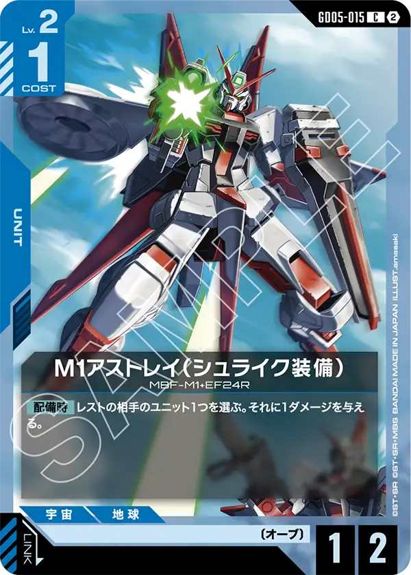
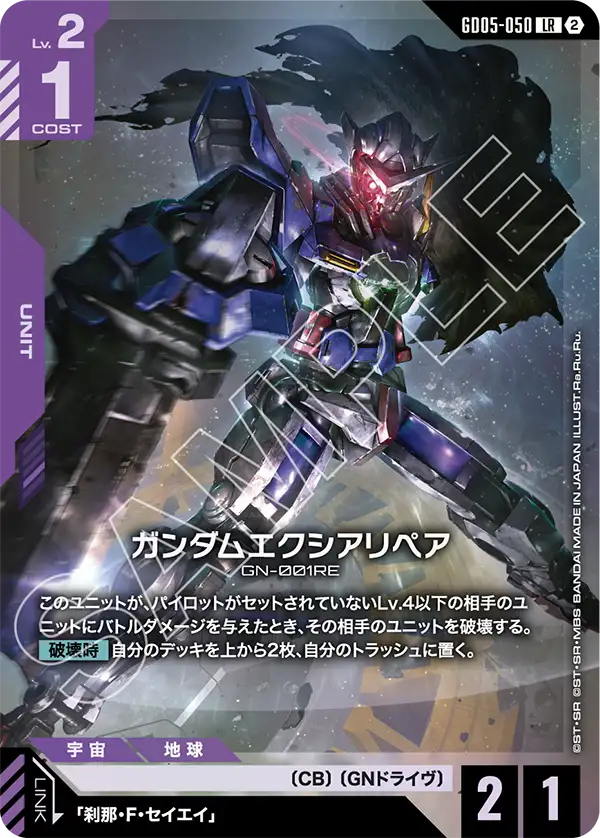
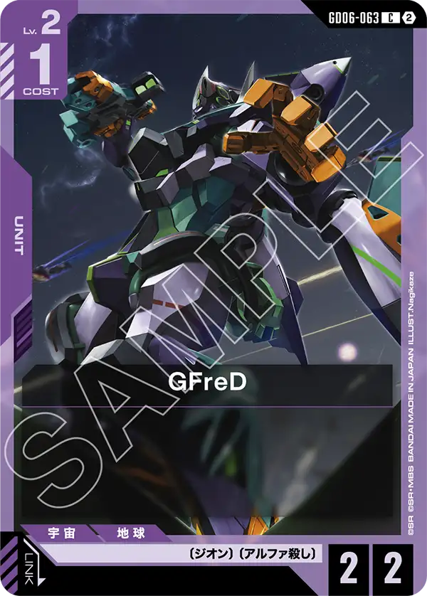
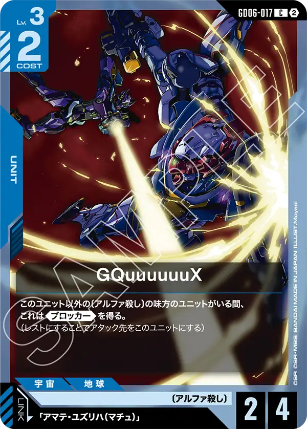


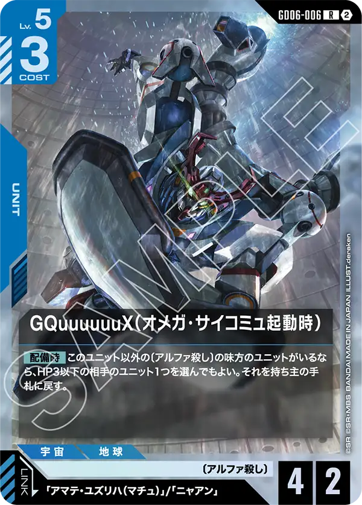
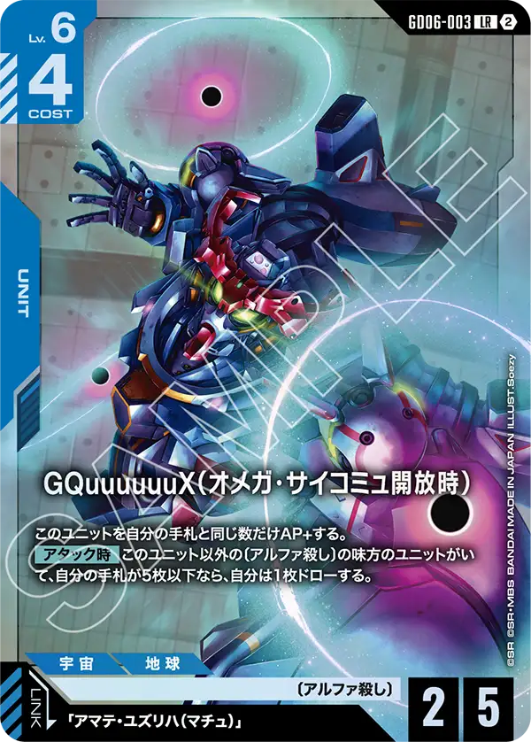
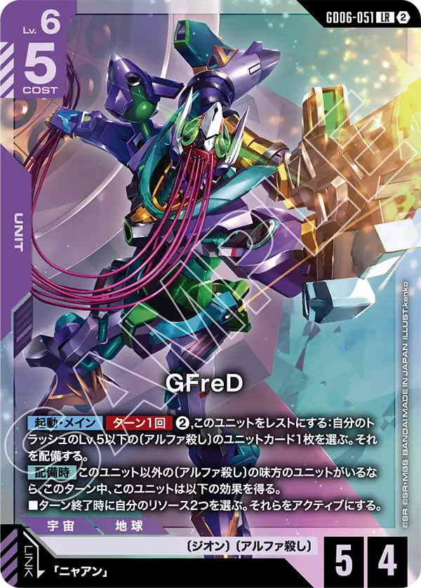
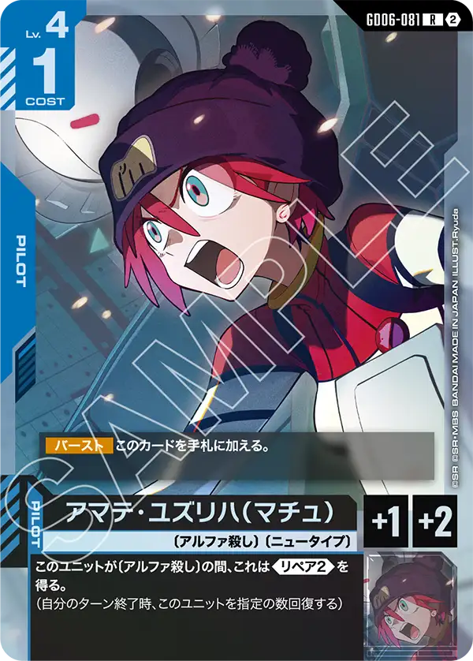
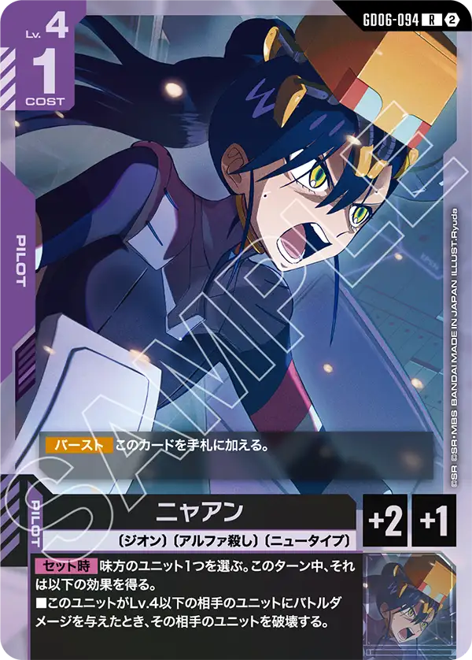

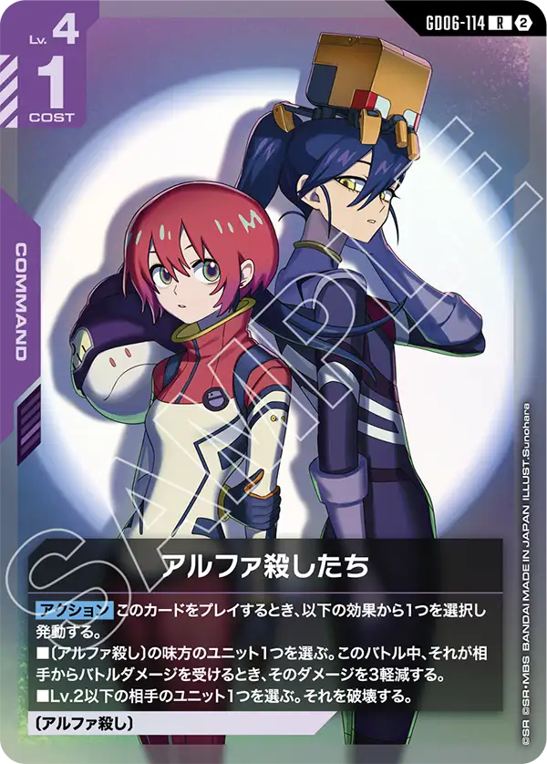
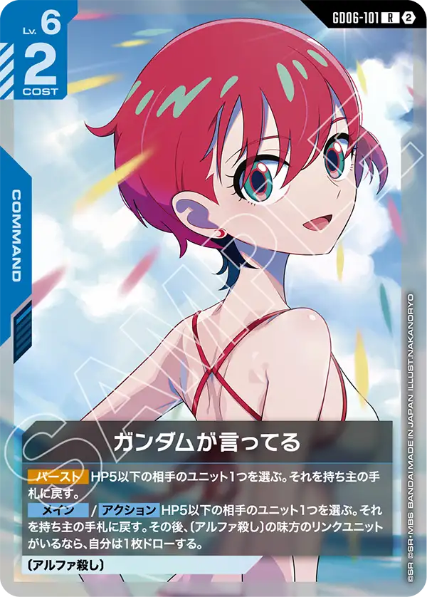

| カード | 種類 | 色 | Lv | コスト | AP/HP | 枚数 | 青/紫での採用率 |
|---|---|---|---|---|---|---|---|
| GD05-015 M1アストレイ（シュライク装備） | ユニット | 青 | 2 | 1 | 1/2 | 4 | 10.3% (3) |
| GD05-050 ガンダムエクシアリペア | ユニット | 紫 | 2 | 1 | 2/1 | 4 | 31.0% (9) |
| GD06-063 GFreD | ユニット | 紫 | 2 | 1 | 2/2 | 4 | 31.0% (9) |
| GD06-017 GQuuuuuuX | ユニット | 青 | 3 | 2 | 2/4 | 4 | 27.6% (8) |
| GD06-062 ギャン（ハクジ装備）（GQ） | ユニット | 紫 | 3 | 2 | 4/3 | 4 | 27.6% (8) |
| ST01-001 ガンダム | ユニット | 青 | 4 | 3 | 3/4 | 4 | 34.5% (10) |
| GD06-006 GQuuuuuuX（オメガ・サイコミュ起動時） | ユニット | 青 | 5 | 3 | 4/2 | 4 | 27.6% (8) |
| GD06-003 GQuuuuuuX（オメガ・サイコミュ開放時） | ユニット | 青 | 6 | 4 | 2/5 | 4 | 31.0% (9) |
| GD06-051 GFreD | ユニット | 紫 | 6 | 5 | 5/4 | 3 | 17.2% (5) |
| GD06-081 アマテ・ユズリハ（マチュ） | パイロット | 青 | 4 | 1 | — | 4 | 31.0% (9) |
| GD06-094 ニャアン 珍 | パイロット | 紫 | 4 | 1 | — | 1 | 6.9% (2) |
| ST01-010 アムロ・レイ | パイロット | 青 | 4 | 1 | — | 4 | 37.9% (11) |
| GD06-114 アルファ殺したち | コマンド | 紫 | 4 | 1 | — | 2 | 13.8% (4) |
| GD06-101 ガンダムが言ってる 珍 | コマンド | 青 | 6 | 2 | — | 2 | 6.9% (2) |
| ST02-016 コルシカ基地 | ベース | 青 | 3 | 3 | —/5 | 2 | 41.4% (12) |
ユニット35枚・パイロット9枚・コマンド4枚・ベース2枚。このうちGD06のカードは10種32枚です。
構成の見どころ
GD06で新しく登場した〔アルファ殺し〕のカードは合計28枚としっかり新弾のカードを利用しているデッキとなっている。
序盤はGFreD[GD06-063]やGQuuuuuuX[GD06-017]を使ってブロッカーも構えつつ戦うことが想定されていると思われるが、なかなかセットでは揃わないので他のアグロ系統のデッキと同じ戦い方をギャン（ハクジ装備）（GQ）[GD06-062]を使って進めていく形となるだろう。
中盤からはGQuuuuuuX（オメガ・サイコミュ起動時）[GD06-006]やアルファ殺したち[GD06-114]を使って盤面を消しつつ、ガンダム[ST01-001]を使ってベースやシールドを削るようなイメージになるだろう。
通常のアグロは旧青紫でのバーンダメージのような盤面を触る事がなかなかできなかったのでそれができるのは良い点だろう。
終盤からは〔アルファ殺し〕の真骨頂でGQuuuuuuX（オメガ・サイコミュ開放時）[GD06-003]で手札を整えつつ、GFreD[GD06-051]で盤面を整え戦っていく形に変わる。
中盤までに使っていたGQuuuuuuX（オメガ・サイコミュ起動時）[GD06-006]も再利用でき、手札の消費無く盤面の数を増やすことができるため、何かのタイミングで盤面が削られてしまっても立て直しが行いやすいデッキと言えよう。
ただし、終盤がものすごく強いデッキでは無いため、序中盤である程度シールドを削っておくことはしっかり忘れないようにしないといけない。
ガンダム[ST01-001]とアムロ・レイ[ST01-010]のセットでAPも上げつつ攻撃ができるため、序盤若干APが足らない可能性があるが補完してくれる。
アルファ殺したち[GD06-114]やガンダムが言ってる[GD06-101]はアルファ殺しで採用が検討されていたコマンドカードでこのデッキでは各2枚の採用となっている。
ここぞという場面で利用され、自分の想定が崩される場合があるためこのデッキを相手にしたときは豊富な手札に何があるのかは予測しながら対戦を行ってほしい。
運営のひとこと
GD06で新しく登場した〔アルファ殺し〕を使ったデッキが優勝した。
アムロを採用した型であるため、APを上げて戦う方式で序盤からしっかり攻撃を仕掛けていく形になる。
アグロデッキでは最近増えたベース2枚の体制で手札を増やす代名詞といえる覚悟の表れ[GD01-100]も無いため、中盤の手札管理は少し大変に思われるが終盤からはGQuuuuuuX（オメガ・サイコミュ開放時）[GD06-003]を使ってドローができるため、アグロデッキ特有の終盤の手札不足に関してはある程度考えなくてもいいだろう。
そのかわり序中盤のパワーも少し他のアグロデッキと比べると無いため、単純なアグロデッキとは異なることを忘れないようにしてほしい。

数え方
採用率は、GD06が大会で使えるようになった11/7から11/15までのニュータイプチャレンジ 2026 MISSION5（11月開催）の入賞デッキのうち、デッキカラーが青/紫の29本を母数にしています。母数が少ないため、1本の違いで採用率が大きく動きます。「珍」は青/紫での採用率が10%未満のカードです。デッキリストが公開されていない入賞デッキは数に入れていません。数字は公式の大会結果から自動で集めた集計です。誤りに気づいたらXアカウント（@gcg_stats）のDMで教えてください。